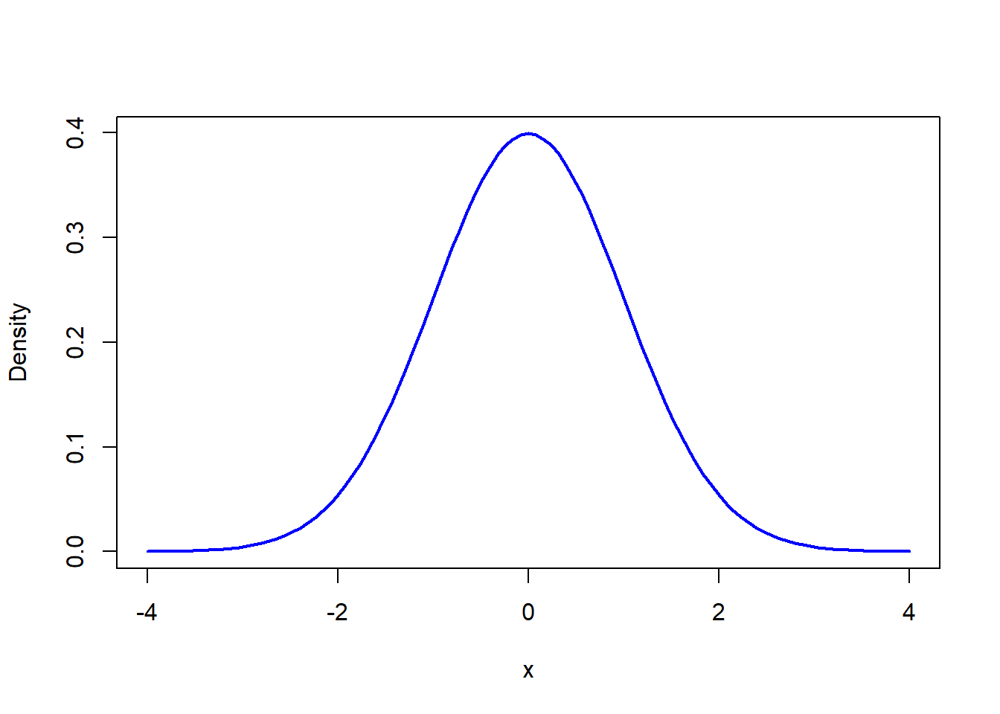
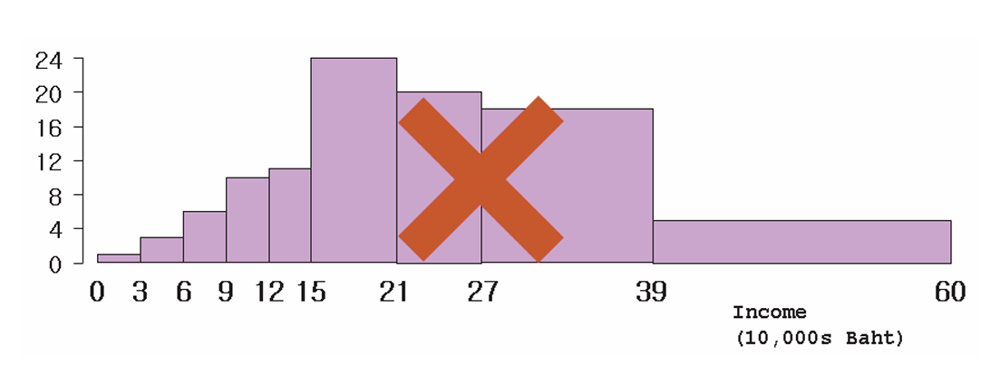
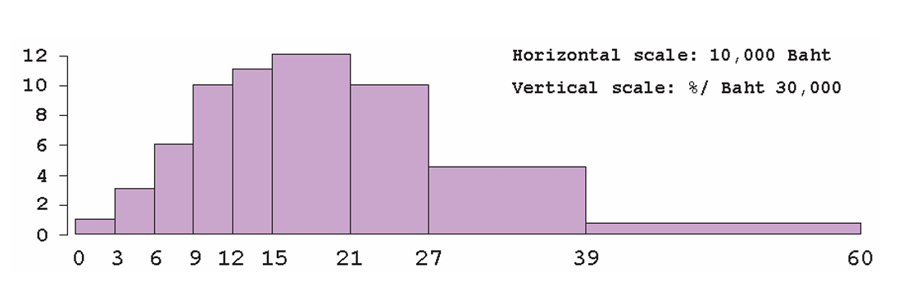
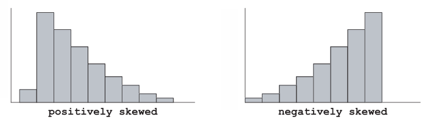

2 Graphical Summaries
NoteLearning objectives
By the end of this chapter, you should be able to:
- explain why graphical summaries are useful for understanding data,
- distinguish between cardinal, ordinal, and nominal data,
- identify appropriate graphical representations for different types of data,
- construct and interpret histograms correctly, including those with unequal class intervals,
- explain how histogram areas represent percentages or probabilities,
- recognize common histogram shapes such as symmetric, skewed, unimodal, and bimodal distributions.
A defining characteristic of today’s information age is the abundance of data. Data in their raw form can be difficult to comprehend. One useful way to summarize a mass of data is through graphical or pictorial representations.
Many such graphs—pie charts, bar graphs, and so on—are easy to understand and commonly used. In this chapter, we focus on the most important graphical representation in statistics: the histogram.1{.sidenote}
NoteBig picture
Graphs help us see patterns in data that are often invisible in raw numbers.
2.1 Types of data
Data are not all the same. A helpful way to think about them is in three levels:
- Cardinal data
- Ordinal data
- Nominal data
Once you know which kind of data you have, it becomes much easier to choose sensible statistics and graphs.
2.1.1 Cardinal data
Cardinal data (sometimes further divided into interval and ratio data) are represented by real numbers—such as heights, weights, and prices. These are quantitative (numerical) data, so arithmetic operations are meaningful.
For example, with heights or prices, it makes sense to say someone is twice as tall or that one item is three times as expensive.
2.1.2 Ordinal data
Ordinal data are values for which only the order (ranking) is meaningful. A common example is a course evaluation scale such as:
- Poor = 1
- Fair = 2
- Good = 3
- Very Good = 4
- Excellent = 5
Here, arithmetic operations usually do not make sense. It would sound strange, for instance, to say:
2 × Fair = Very Good.
Still, ordinal data are useful because the ranking is clear: Excellent (5) is better than Very Good (4), which is better than Good (3), and so on. Importantly, that ordering remains the same even if we changed the numbers used to label the categories.
2.1.3 Nominal data
Nominal data are usually qualitative or categorical. The numbers attached to categories serve only as labels. For example, marital status might be coded as:
- Single = 1
- Married = 2
- Divorced = 3
- Widowed = 4
Because these numbers are arbitrary, arithmetic operations are meaningless. It is absurd, for example, to say:
married ÷ 2 = single.
With categorical data, the main meaningful calculation is counting—how often each category occurs. We often summarize nominal data using a frequency distribution, or a relative frequency distribution showing proportions.
ImportantKey idea
The type of data determines which graphs and summaries make sense.
2.1.4 Why this matters
Keeping the data type in mind helps determine which statistical tools—graphical or otherwise—are appropriate. Among graphical techniques, we will emphasize the histogram, which plays a central role in statistics and probability.
2.2 The histogram
To understand how a histogram works, let us look at a concrete example.
Table 4.1 shows the percentage of families in each income class interval, measured in thousands of baht per year, for Bangkok residents in a recent year.
| Income (Baht ’000) | Percentage |
|---|---|
| 0–30 | 1 |
| 30–60 | 3 |
| 60–90 | 6 |
| 90–120 | 10 |
| 120–150 | 11 |
| 150–210 | 24 |
| 210–270 | 20 |
| 270–390 | 18 |
| 390–600 | 5 |
| Over 600 | 1 |
To construct a histogram from Table 4.1, the first step is to draw the horizontal axis, representing income.
A common mistake at this stage is to give each class interval the same width, regardless of its actual size. This leads to a misleading picture.

Instead, the horizontal axis should reflect the actual width of each income class, as shown below.2

The next step is to draw the blocks. Students often make the mistake of setting the height of each block equal to the percentage in the table. The figure below shows what happens if this is done.

This gives a misleading impression—for example, it appears that there are more families earning over 390,000 baht than under 120,000 baht, which is not correct.
WarningCommon pitfall
In a histogram, heights alone do not represent frequencies when class widths differ.
Because the class intervals are unequal, the height of each block must be calculated as:
percentage ÷ class width (relative length)
For example, the interval 150–210 spans two 30,000-baht units. Dividing 24% by 2 gives the correct height. The vertical axis is therefore a density scale (percent per 30,000). The correct histogram is:

In a histogram: - areas represent percentages (or probabilities) - heights represent crowding per horizontal unit
An important property to remember is that the total area under the histogram must equal 100 percent.
ImportantKey idea
Histograms represent data through areas, not just heights.
2.3 Shapes of histograms
Histograms come in many shapes. A histogram is symmetric if the two sides mirror each other around a central vertical line. The most famous symmetric histogram is the Gaussian (normal) distribution.
A skewed histogram is one with a long tail extending either to the right or to the left:

Histograms can also be unimodal, with a single peak, or bimodal, with two peaks, and so on.

ImportantKey idea
The shape of a histogram provides valuable information about the distribution of the data, beyond what summary statistics alone can reveal.
2.4 Quantitative and qualitative variables
A variable is a characteristic that can vary from one individual to another.
For example, if we ask “How old are you?”, the variable of interest is age.
In this case, age is a quantitative variable, since it is usually expressed as a number.
In other cases, the question might be “What color is your hair?”
Here, the variable is a qualitative variable, because the responses describe categories rather than numerical magnitudes.
A useful distinction among quantitative variables is between discrete and continuous variables.
- A discrete variable takes on values in fixed steps. An example is the number of children in a household.
- A continuous variable can take on any value along a real line, such as height, weight, or income.
Working with quantitative variables is usually straightforward. Qualitative variables, however, are often handled by assigning arbitrary numerical codes to the possible responses. In practice, this means that a researcher codes qualitative information into nominal numerical data.
For example, a course evaluation might be coded as:
- Poor = 1
- Fair = 2
- Good = 3
- Very Good = 4
- Excellent = 5
WarningCommon pitfall
Do not treat coded qualitative variables as numerical measurements. Arithmetic operations on these codes usually have no meaningful interpretation.
It is important to remember that these numbers are labels rather than true measurements, and arithmetic operations on them may not be meaningful.
It is also useful to distinguish between different data structures, such as:
- Cross-sectional data, which observe many individuals at a single point in time
- Time-series data, which track a single unit over time
- Panel (or longitudinal) data, which follow multiple individuals over time
The statistical tools available to the researcher often depend on which of these data structures is being used.
NotePause and think
Which of the variables you encounter in daily life—income, grades, or job titles—are quantitative, and which are qualitative?
2.5 Other graphical representations of data
There are many graphical methods available for representing data. Some, such as bar graphs and pie charts, are widely known. Others, such as the stem-and-leaf plot or the ogive, are more specialized.
Most introductory statistics textbooks discuss a variety of graphical summaries, and interested readers are encouraged to consult these sources.3
ImportantBig picture
Many graphical tools exist, but for understanding distributions and probabilities, the histogram plays a uniquely central role.
ImportantChapter summary
Graphical summaries provide a powerful way to explore and communicate patterns in data.
Different types of data—cardinal, ordinal, and nominal—call for different graphical representations. Among these, the histogram plays a central role in statistics because it summarizes distributions through areas and connects naturally to ideas of probability.
Understanding how to construct and interpret histograms, especially when class intervals are unequal, is essential for sound statistical analysis and for the topics that follow in later chapters.
2.6 Exercises
2.6.1 Conceptual questions
Explain why graphical summaries are often more informative than tables when dealing with large data sets.
Give one example each of:
- a cardinal variable,
- an ordinal variable, and
- a nominal variable.
Briefly explain why arithmetic operations make sense for one but not for the others.
Why can assigning numbers to qualitative categories be misleading if those numbers are treated as measurements?
A histogram shows two distributions with the same total area. What does this tell you about the data being represented?
NoteCheck your understanding
If two histograms look very different but have the same total area, what does this imply about the percentages or probabilities they represent?
2.6.2 Interpreting histograms
- Consider a histogram constructed using unequal class intervals.
- Why must the vertical axis be interpreted as a density rather than a raw frequency?
- What would go wrong if heights were drawn directly from percentages?
- A histogram is right-skewed.
- What does this tell you about the distribution of the data?
- Give a real-world example of a variable that is likely to be right-skewed.
- Explain the difference between a unimodal and a bimodal histogram.
What might cause a bimodal shape in real data? - The histogram below shows the distribution of final scores in a certain class.

- which block represents the people who scored between 60 and 80?
- Ten percent scored between 20 and 40. About what percentage scored between 40 and 60?
- About what percentage scored over 60?
9.A histogram of pocket-money used by EBA students in a week is shown above. No student used over Baht1,000 per month. The block over the class interval 200-500 is missing. How tall must it be?

- The figure below shows a block of family income in a certain town. About what percent of the families in the city had incomes between Baht 15,000 and 25,000?

WarningCommon pitfall
Students often confuse the height of bars with the area of bars in a histogram.
2.6.3 Data structure and graphs
- For each of the following data structures, suggest an appropriate graphical summary and explain why: - cross-sectional data, - time-series data, - panel (longitudinal) data.
- Why is the histogram particularly important for later topics in probability and statistical inference?
2.6.4 Optional challenge
- Find a real dataset (from news, government statistics, or online sources) and:
- classify the variables as cardinal, ordinal, or nominal,
- propose at least one appropriate graphical summary for each variable,
- explain why a histogram would or would not be appropriate.
Why might graphs be more informative than tables when data sets are large?↩︎
Class intervals need not be equal; wider intervals may be used where data are sparse.↩︎
Some recommended texts include Peck, Olsen, and Devore (2005, Chapter 3), Utts and Heckard (2006, Chapter 2), and Keller (2005, Chapters 2 and 3). The exercises at the end of this book also ask for graphical summaries not fully explained here, but which are worth exploring with the help of other introductory texts or online resources.↩︎